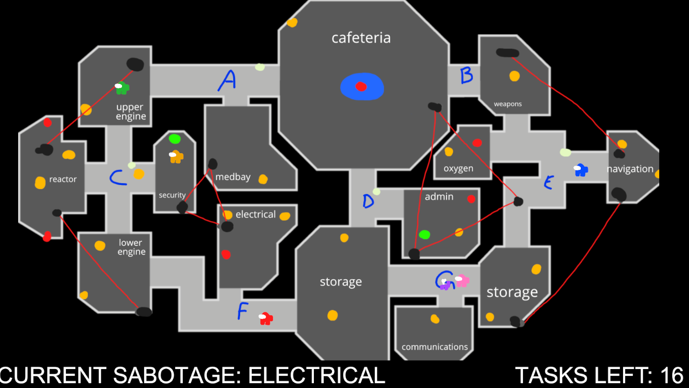
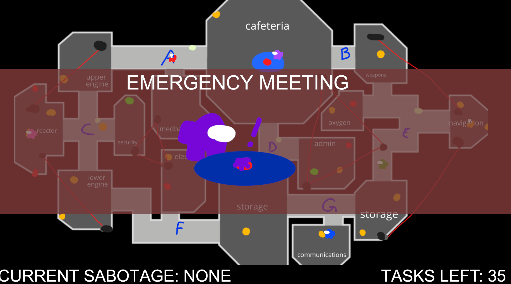
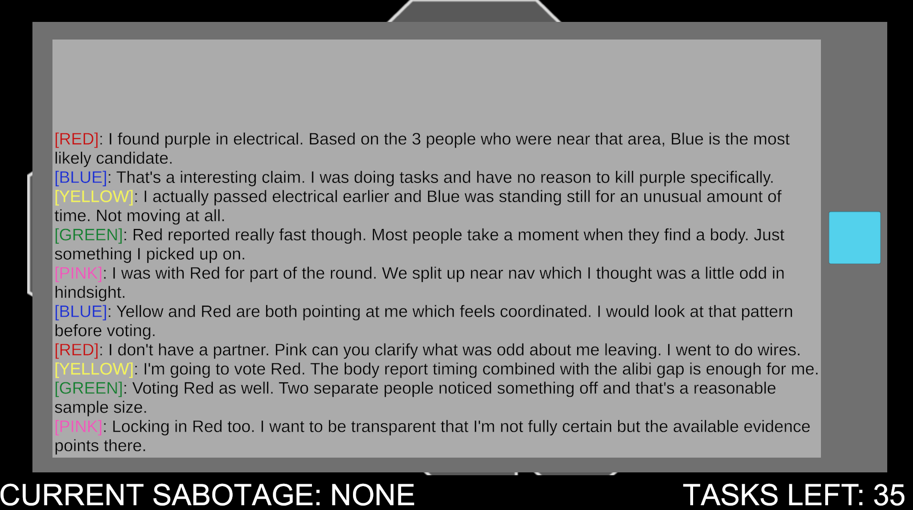
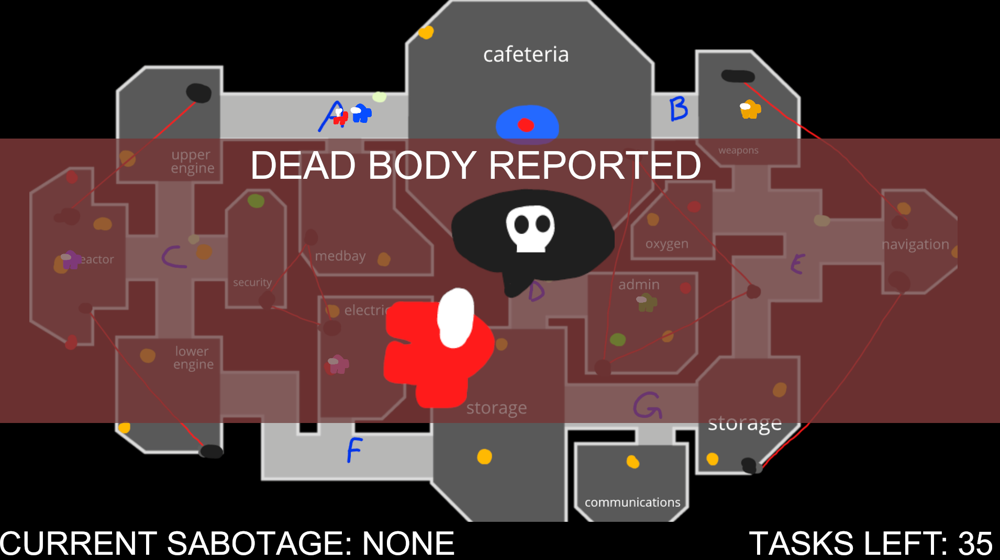
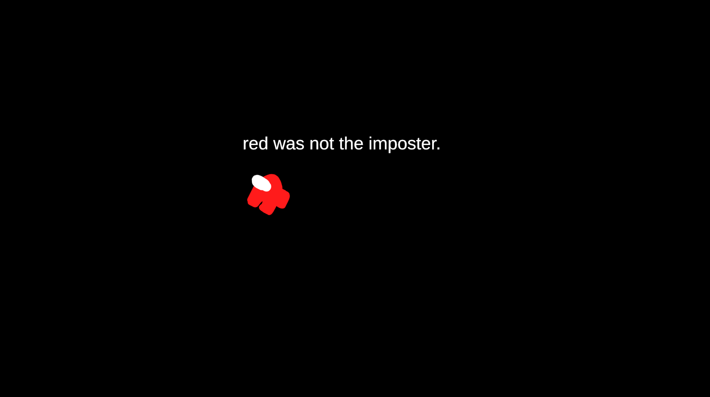

hackalytics 2026 submission in which we basically just made LLMs play among us.
Showcase Video Source CodeResources
DiscordInformation
My partner (Richard Xiong) and I re-created the video game among us in 36 hours, and placed 6 LLM agents within the game.
Each LLM was given info about their surroundings. The imposter (pink) had to kill the amongi whilst the crewmates (everyone else) had to do tasks.
If the crewmates do all tasks or vote out the correct imposter, they win. The imposter wins via sabotaging and killing every crewmate.
Any amongi agent can call a meeting or report a dead body to start a conversation, in which each LLM will present their findings and vote someone else (or skip).
It was very interesting seeing them lie, group findings together, and more! Seeing them think waas very cool not gonna lie
Michael's Description
I DELETED MY CODEBASE 12 HOURS BEFORE THE DEADLINE BY ACCIDENT SO I HAD TO REDO THE ENTIRE UNITY ENVIRONMENT.
UGGHHH drFmjoikjcftjik AND BECAUSE OF THIS I WAS TOO TIRED TO PRESENT THE PROJECT TO THE JUDGES (WE WOULD'VE WON)
whatever. it was cool to code the entire among us game within 12 hours though. seeing the llms think real time was cool
this one iteration, the imposter killed, vented out, and then self reported and blamed blue and won. it was sick.
Assets

game screen

emergency meeting being called

discussion board and voting session

dead body report screen

red being voted out LOL